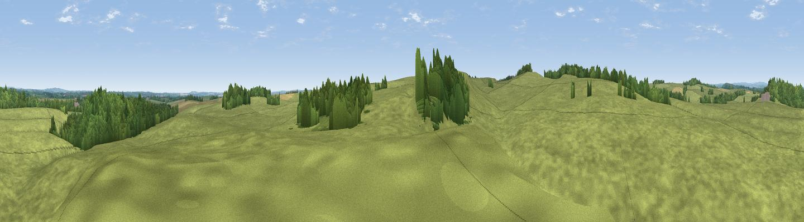

Whitley Hill
#40451 in England · top 93% of its area beats it · near BelsayWhere it is
The exact computed spot (NZ 08261 77434). Click the marker for map links.
The view, rendered

A 360° render of this exact spot computed from the terrain model, tree cover and land cover — summer colours, afternoon light, calibrated against photographs of famous viewpoints. Real trees, hedges and buildings will differ in detail.
The panorama
Grey silhouette: terrain skyline in each direction (720 bearings, Earth curvature and refraction included). Dashed green: skyline with trees (+15 m) and buildings (+8 m) as obstacles. Blue strip: how far the ground is visible on each bearing.
Where the view opens
Wedge length = distance to the farthest visible ground on that bearing (vegetation-aware). Rings at 10, 25 and 50 km.
What fills the view
83% grassland · 13% woodland · 3% cropland
Angular shares of the visible panorama (visual magnitude), not map area. Landscape diversity 0.24 (0–1 Shannon).
Key numbers
More beautiful places nearby
The staircase of upgrades: each row has a higher view potential than everything closer. Driving times are estimates from straight-line distance, calibrated against real road routing — check an actual route before setting out.
| Place | Direction | Drive | Score |
|---|---|---|---|
| Slate Hill | SSW · 0 km | ~1 min | 33.5 |
| Viewpoint near Belsay | NNW · 1 km | ~3 min | 50.4 |
| Shaftoe Crags | NW · 5 km | ~12 min | 68.7 |
| Viewpoint near Greenside | SSE · 17 km | ~30 min | 74.2 |
| Darden Rigg | NNW · 21 km | ~36 min | 77.0 |
| Viewpoint near Rothbury | N · 21 km | ~36 min | 81.1 |
| Dove Crag | NNW · 22 km | ~36 min | 82.3 |
| Viewpoint near Glanton | N · 39 km | ~58 min | 82.9 |
55.09128, -1.87211 · source: osm peak · position refined by local search. Computed location — check access rights before visiting.